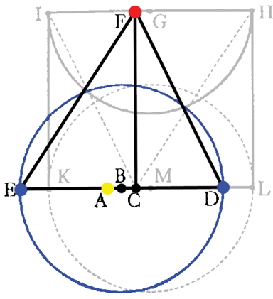

Chapter 22
The earth, one of the celestial bodies (for Copernicus), or the sun (for the rest) had not hitehrto required this equant. (p.305)

In the Ptolemaic form, although the first inequalities have an equant, the second inequalities are simple eccentrics, as is the motion of the sun. In the Copernican form, all planets save the earth have a double epicycle, while the earth has only a simple epicycle or eccentric. Kepler disagrees with this assumption, and in this chapter proves that the earth does not simply move on an eccentric -- it does not maintain the same distance from the point of its uniform movement. This will lead us to the hypothesis that the earth, as the other planets, has a center separate from its equant.
Here is Kepler's diagram, in the Copernican version. He seeks to take two measurements of Mars (F) from two earth positions (E and D) that are the same angle away from the line from the equant to Mars: that is, FCE = FCD = 64°23'30". (They are shown as 90° in the diagram because that is the angle Kepler would have wished for). Now, if the earth moves on a circle centered on the point of uniform angular motion C, then the distances EC and DC should be the same, and angles EFC and DFC should be the same. But they are not: using measurements from 1585 and 1591 having FCE=FCD, EFC is found to be 38°5½' while DFC is found to be 36°51', a significant difference.
| Next |